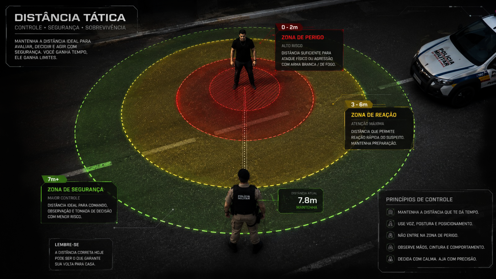
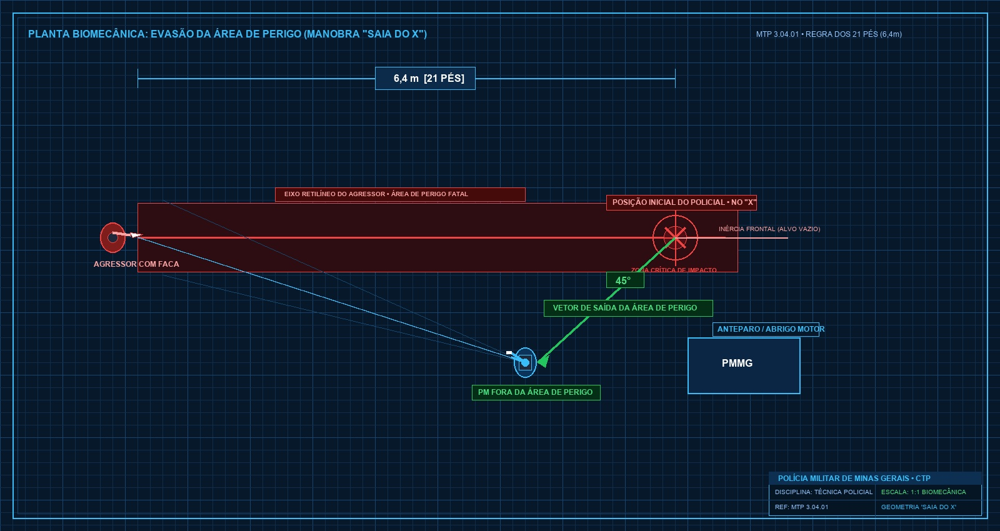

Gerenciamento Espaço-Temporal, Hiato Reacionário e Evasão Angular da Linha de Ataque (MTP 3.04.01 e 3.04.02)
No confronto policial, o espaço físico entre a guarnição e o abordado converte-se diretamente em tempo cognitivo e biomecânico para perceber a ameaça, decidir a resposta e acionar os meios defensivos proporcionais (MTP 3.04.01). A redução de distância sem controle tático reduz a margem de reação do policial.
Permite processar intenções hostis, realizar comando verbal imperativo, acionar a cobertura da guarnição e selecionar alternativas táticas proporcionais.
Posiciona o policial no raio de ação direta do agressor, onde uma investida com lâmina ou tentativa de arrebatamento de arma consome frações de segundo.
Em 1983, o Tenente Dennis Tueller mensurou a dinâmica temporal entre o avanço de um indivíduo com arma branca e a reação armada de um operador:
Vídeo 1 — Demonstração Prática da Regra de Tueller (Tueller Drill) em Câmera Lenta: Velocidade do Ataque com Arma Branca vs. Tempo de Saque e Reação Armada. (Fonte: HavocWorks / Análise Doutrinária Dennis Tueller)
ALERTA DE SEGURANÇA: A uma distância inferior a 6,4 metros (~21 pés / 7 metros), um agressor em corrida frontal pode atingir o policial militar antes que este conclua o saque, enquadramento e disparos defensivos eficazes.
Um indivíduo motivado percorre 6,4 metros em aproximadamente 1,5 a 1,7 segundo — tempo equivalente ou inferior ao necessário para o policial perceber o ataque e sacar do coldre sob surpresa.
A marca dos 21 pés não constitui barreira física. Coldres de retenção Nível II/III da PMMG demandam entre 1,8s e 2,2s sob estresse agudo. Além disso, disparos isolados não interrompem a movimentação do agressor instantaneamente.
A correlação visual entre distância física e tempo de resposta demonstra a necessidade de preservar espaço durante a intervenção:

Figura 1 — Correlação de Distâncias Táticas, Zonas de Perigo e Tempos de Reação. (Fonte: Centro de Treinamento Profissional — CTP/PMMG / Dennis Tueller)
DIRETRIZ DO MTP 3.04.02: Estabeleça a distância de segurança primária de 5 a 7 metros antes de iniciar comandos verbais ou procedimentos de busca. Havendo suspeita de porte de arma branca, amplie a margem para além de 7 metros e posicione anteparo físico.
Permanecer estático ou recuar em linha reta diante de investida com arma branca resulta em alcance do agressor. O operador deve quebrar a linha reta de avanço do atacante:
A velocidade média de corrida frontal humana é de aproximadamente 4,5 m/s, enquanto a velocidade de recuo de costas é de apenas 1,5 m/s, com risco de queda. Recuar em linha reta mantém o policial na rota direta da lâmina.
O deslocamento diagonal força o agressor a frear e reorientar a passada, gerando uma janela de ganho temporal de +0,8s a 1,2s para saque e busca de abrigo.
Desloque-se na diagonal a 45° para fora da linha reta de avanço do agressor, quebrando o vetor de ataque frontal.
Interponha a viatura policial (bloco do motor), postes, muretas ou desníveis de terreno entre você e o agressor para bloquear o avanço direto.
Execute o saque durante a movimentação; mantida a ameaça letal iminente e frustrado o comando verbal, empregue a força letal em legítima defesa (Art. 25 do Código Penal).
Assista ao registro operacional gravado por câmera policial e observe a velocidade com que a distância física é percorrida pelo agressor:
Vídeo 2 — Registro Operacional de Ataque com Arma Branca em Curta Distância e Resposta Armada. (Fonte: Acervo Operacional CTP/PMMG)
A investida ocorreu em menos de 2 segundos. A curta distância inicial exigiu reação motora imediata. Caso o policial tivesse recuado de costas em linha reta, teria sido alcançado antes da conclusão do disparo defensivo.
O policial militar atua em desvantagem temporal contra quem inicia a agressão armada, em razão do tempo biológico e biomecânico de processamento neurológico:

Figura 2 — Planta Técnica Blueprint: Posição Inicial no Ponto "X" (Eixo Retilíneo de Perigo), Vetor de Saída a 45° e Evasão da Área de Agressão. (Fonte: Centro de Treinamento Profissional — CTP/PMMG)
Tempo inicial de partida: 0,00 segundo (decisão prévia tomada).
Velocidade de corrida frontal: ~4,3 a 4,8 m/s (~16 km/h em arrancada).
Distância percorrida em 1,5s: 6,4 metros (21 pés lineares).
Latência neural compulsória: 1,30s a 1,70s (percepção, decisão e acionamento).
Tempo de saque (coldre Nível II/III): 1,50s a 2,00s sob estresse agudo.
Ganho temporal da quebra a 45°: +0,80s a 1,20s (desaceleração forçada do agressor).
Detalhamento cronométrico das 4 fases neurais do Ciclo Decisório (MTP 3.04.01):
Detecção visual da movimentação hostil ou extração da lâmina pelo suspeito.
Processamento cerebral: confirmação de que o estímulo é um ataque letal real.
Seleção da conduta motora: quebrar o eixo, sacar a arma e buscar abrigo.
Transmissão neuromuscular motora: movimentação física, saque e disparo.
SÍNTESE TEMPORAL: Enquanto o militar consome de 1,05s a 1,70s para processar e iniciar a resposta, o atacante percorre de 5 a 6 metros em direção à guarnição.
Em abordagens de rotina, policiais frequentemente perdem a vantagem da distância por inércia ou comodismo:
Normatização ABNT NBR 6023 — Ordenação Alfabética Rigorosa